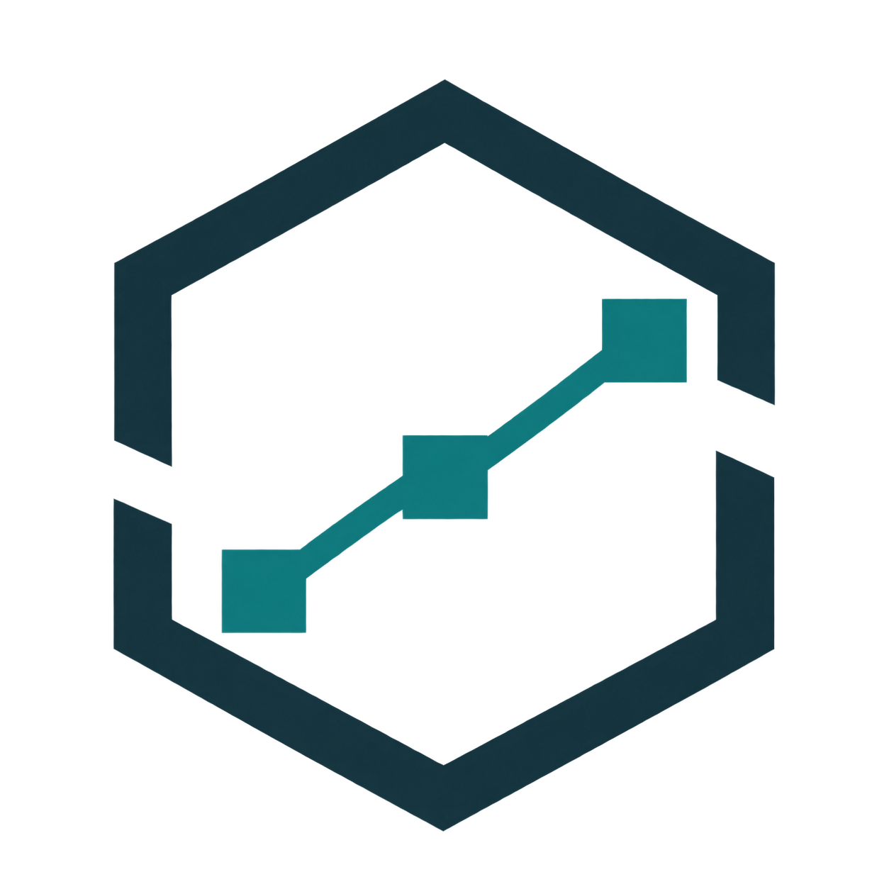

EVIDENCE WORKSPACE / BRAND IDENTITY

Continuum컨티뉴엄 · 제조 이상 조사·교대 연속성 워크스페이스
근무는 끝나도,
조사는 끊기면 안 됩니다.
분석 근거와 미확인 항목, 사람의 판단을 같은 Case에서 다음 교대에게 이어 줍니다.
Continuum
교대가 바뀌어도 같은 Case를 이어 조사합니다.
AI가 원인을 확정한다는 약속이 아니라, 다음 담당자가 근거·미확인 항목·판단 맥락을 이어 검토하도록 돕는 약속입니다.
근거를 먼저, 판단은 함께.
정밀함 · 침착함 · 설명 가능성
열린 프레임은 조사 범위, 연결된 노드는 관측 단서. 사람의 검토로 조사를 마무리합니다.
차분한 업무 화면, 분명한 신호
Deep navy
#142D35Signal teal
#167D7BCanvas
#F5F7F8Warning amber
#946019Pretendard / 읽을 수 있는 근거
확인 가능한 근거로, 사람이 마무리하는 조사
후보는 조사 우선순위입니다. 근거와 한계를 확인한 뒤 검토 의견을 기록하세요.
로컬 글꼴 · 실제 텍스트 워드마크 · Lucide 아이콘 · 장식보다 정보 위계